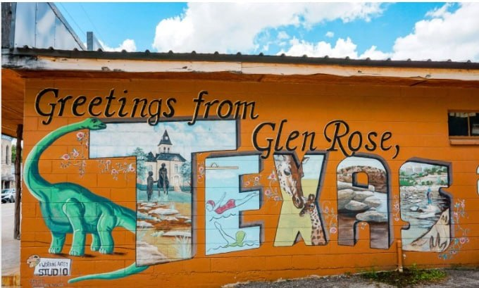
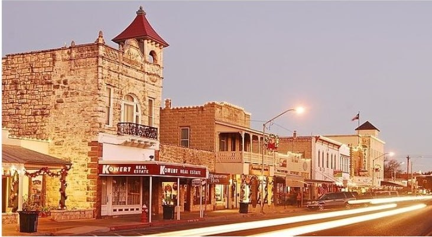
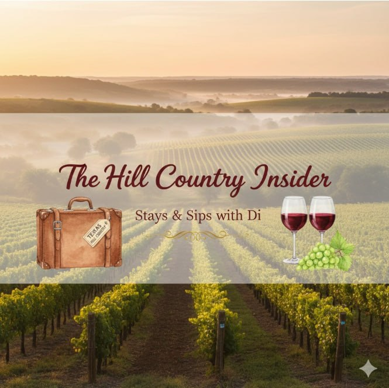

Forget the crowded highways and the same old scenery! As your local Hill Country Insider, I am letting you in on a secret: the true magic of Texas's wildflower season is not just in seeing the bluebonnets — it is in the journey. This spring, ditch the stress and embark on our exclusive "Bluebonnet Back Roads" adventure, a scenic route from DFW that unfolds into a tapestry of color, history, and pure Texas charm, culminating in the heart of Fredericksburg.
The Scenic Overture: DFW to Glen Rose — Where Dinosaurs Roamed
Your adventure begins as you peel off the main arteries of DFW and head southwest towards Glen Rose, affectionately known as the "Dinosaur Capital of Texas." This is like a step back in time. Long before vineyards graced these hills, dinosaurs like the mighty Acrocanthosaurus left their footprints in the Paluxy Riverbed, many of which are still visible today! Take a moment to stretch your legs, grab a coffee, and marvel at a town proud of its prehistoric past.

Insider Tip: While most flock to Dinosaur Valley State Park, ask a local where to find some of the less-trafficked riverbed tracks for a truly unique photo op!
Through the Heart of Authenticity: Hico & Llano — Cowboys, Coffee, and Crown Jewels
Leaving Glen Rose, you will journey through charming towns that feel plucked from a classic Western film. First up, Hico, known as "The Cowboy Capital of the World," and famously (or infamously!) linked to Billy the Kid. This tiny town boasts character, antique shops, and the famous Koffee Kup Family Restaurant, a Texas institution since 1948. Their pies alone are worth the stop!
As you continue south, the landscape gently transforms, ushering you into the granite country around Llano. Did you know Llano is often called "The Deer Capital of Texas" and sits atop the Llano Uplift, one of Texas's true geological wonders? This ancient dome of granite and other metamorphic rock is home to some of the oldest rocks in North America — and provides the perfect mineral-rich soil for those vibrant wildflowers to burst through! The air here feels different, clearer, and infused with the scent of mesquite and spring.
The Grand Finale: The Willow City Loop — Texas's Masterpiece in Bloom
Just when you think you have seen it all, prepare for the pièce de résistance: the legendary Willow City Loop. This 13-mile paved road, nestled north of Fredericksburg, is a living canvas. Here, the bluebonnets create sprawling, undulating carpets of sapphire, often interspersed with fiery Indian paintbrush, cheerful coreopsis, and delicate evening primrose.
What makes it truly special (and unlike North Texas blooms): The dramatic elevation changes, flowing creeks, and rugged limestone cliffs create an almost otherworldly backdrop for these iconic flowers. It is a photographer's dream and a soul-soothing experience that truly defines the untamed beauty of the Hill Country.
Important Insider Note: The Willow City Loop is almost entirely private land. Please admire the flowers from your vehicle and respect property signs. Pulling over and parking in unauthorized areas is discouraged to preserve the beauty for everyone.
Arriving in Style: Fredericksburg Awaits!

After soaking in the panoramic views of the Loop, your journey concludes in the charming German town of Fredericksburg. And this is where The Hill Country Insider steps in! Imagine ending your wildflower drive not in a crowded motel, but with a reserved table at a boutique winery, a glass of exquisite Texas wine in hand, and a cozy villa awaiting your arrival.
Ready to Experience the Bluebonnet Diamond Loop?

As your local expert, I curate exclusive "Drive, Sip, Stay, Shop" itineraries designed specifically for my DFW VIP groups (that is all my BFF's and their BFF's as well!).
I am happy to secure:
- Prime Photo Spots: The best routes and views for those unforgettable bluebonnet memories.
- Diamond Perks: Reserved seating and private experiences for your group at top wineries and unique lunch spots.
- Luxury Stays: Exclusive rates on charming B&Bs and boutique villas.
- Seamless Logistics: So you can simply relax and enjoy the bloom!
Do not just drive through the wildflowers this spring — immerse yourself in the magic with The Hill Country Insider.